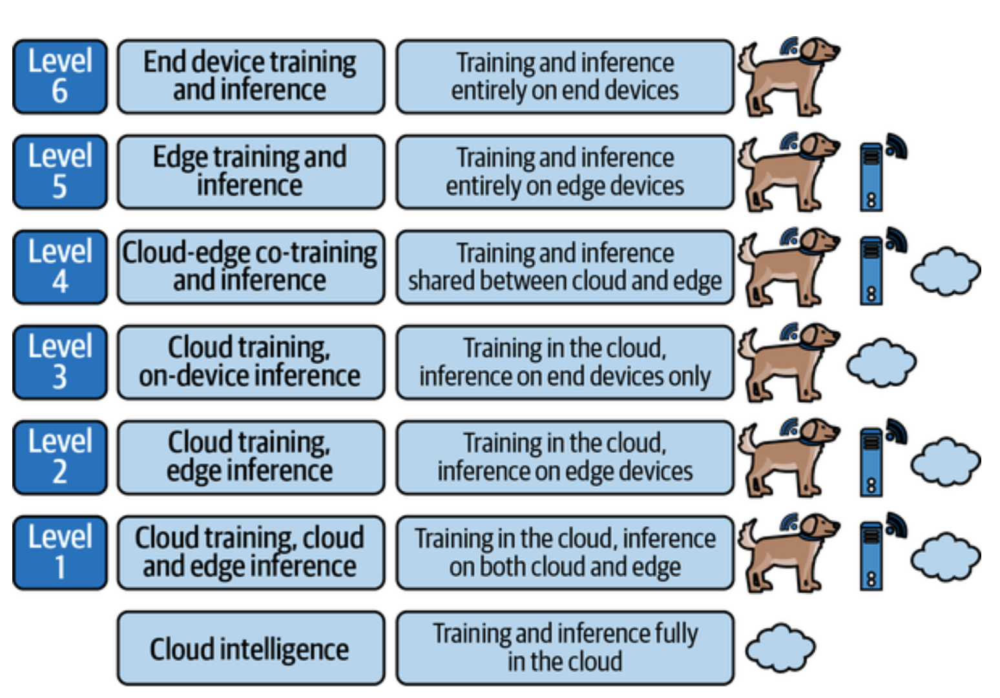

Chapter 1
A Brief Introduction to Edge AI
- Embedded systems are meant to perform one specific, dedicated task.
- The data obtained from sensors tends to have a very high volume but a relatively low informational content.
- Send large volumes to low-value information is very costly and energy intensive. Due to this a majority of data collected by IoT sensors are usually discarded.
Edge AI- Instead of sending data off to some distant location for processing, decisions are taken locally. Only send important information to the servers.

- Digital Signal Processing (DSP) is the practice of using algorithms to manipulate the data captured by embedded systems. DSP is used to modify signals which are fed to ML systems.
Benefits of Edge AI
BLERP
- Bandwidth
- Latency
- Economics
- Reliability
- Privacy
Edge AI Vs Regular AI
- Edge AI is ususally used for inference. It is rare to train models on the edge devices. Edge devices will lack labeled data which will be required for training.
- Focus of edge AI is on sensor data. DSP is a critical part of most edge AI deployments.
- ML models can get very small.
- Learning from feedback is limited.
- Compute is diverse and heterogeneous - Microcontrollers, System-on-chip (SoC), FPGAs etc
- “Good enough” is often the goal
- Tools and best practices are still evolving